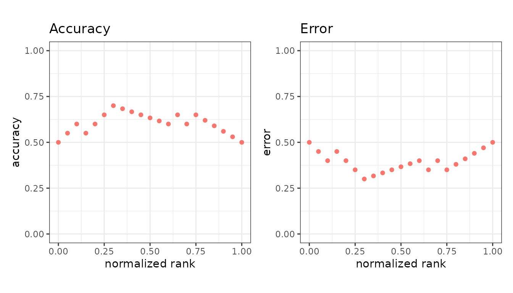
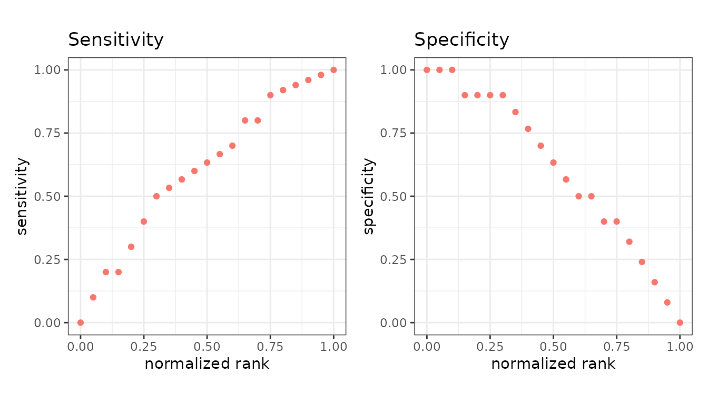
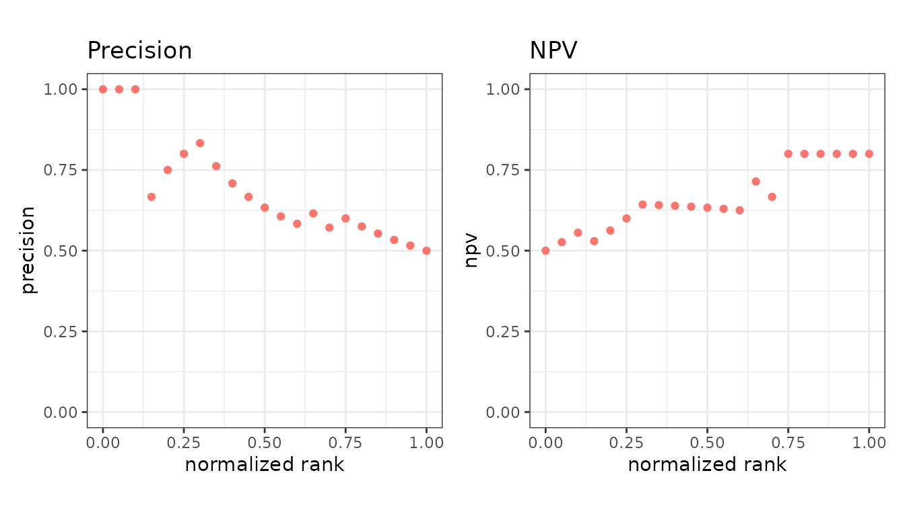
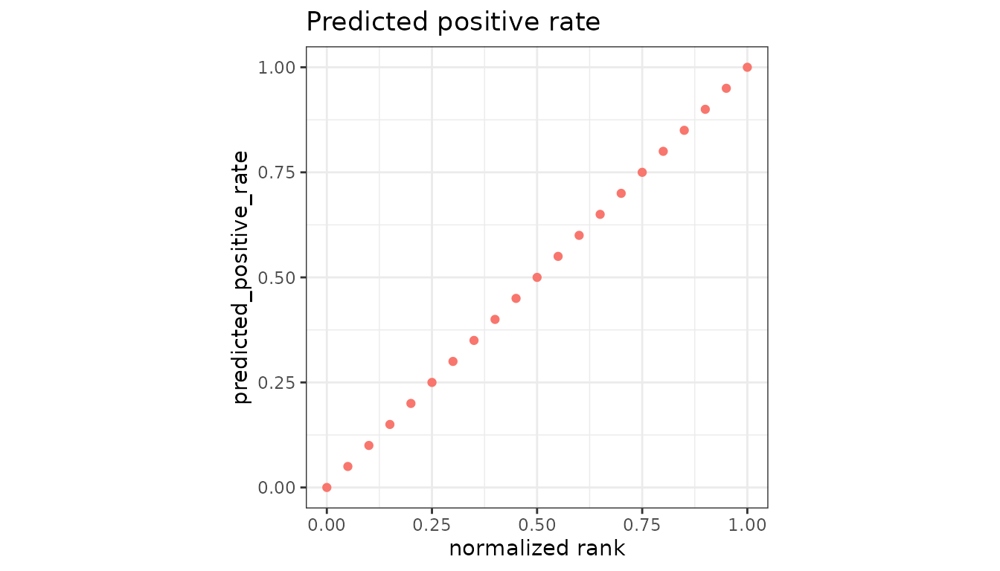

Confusion-matrix rates
Source:vignettes/articles/measures-confusion-matrix.Rmd
measures-confusion-matrix.RmdEverything here is a ratio of two cells of the 2x2 table, evaluated at every cutoff.
| Predicted positive | Predicted negative | |
|---|---|---|
| Actually positive | TP | FN |
| Actually negative | FP | TN |
library(precrec)
library(ggplot2)
points <- evalmod(scores = P10N10$scores, labels = P10N10$labels,
mode = "basic"
)Overall
| Measure | Formula | Range |
|---|---|---|
accuracy |
(TP + TN) / all | 0 to 1 |
error |
(FP + FN) / all | 0 to 1 |
Accuracy is the measure to distrust first. On data with 1% positives, calling everything negative scores 0.99.

Rates over the actual classes
These divide by a row of the table, so they do not move when the class balance changes.
| Measure | Formula | Also known as |
|---|---|---|
sensitivity |
TP / (TP + FN) | recall, TPR, hit rate |
specificity |
TN / (TN + FP) | TNR, selectivity |
fpr |
FP / (FP + TN) | fall-out, 1 - specificity |
fnr |
FN / (TP + FN) | miss rate, 1 - sensitivity |

The ROC curve is sensitivity against fpr,
which is why it is blind to class balance - both axes are row-wise
rates.
Rates over the predicted classes
These divide by a column, so they do move with the class balance. That is what makes them informative on imbalanced data, and what makes them impossible to transfer between datasets.
| Measure | Formula | Also known as |
|---|---|---|
precision |
TP / (TP + FP) | PPV |
npv |
TN / (TN + FN) | negative predictive value |
false_discovery_rate |
FP / (TP + FP) | 1 - precision |
false_omission_rate |
FN / (TN + FN) | 1 - NPV |

The precision-recall curve is precision against
sensitivity - one column-wise rate against one row-wise
rate. See balanced and imbalanced
data.
How much gets flagged
| Measure | Formula | Also known as |
|---|---|---|
predicted_positive_rate |
(TP + FP) / all | rate of positive predictions |
predicted_negative_rate |
(TN + FN) / all | rate of negative predictions |
Useful when the cost of review is what constrains you: they say how much work a cutoff creates, regardless of whether the work is well spent.
ppr <- evalmod(scores = P10N10$scores, labels = P10N10$labels,
mode = "basic", metrics = "predicted_positive_rate"
)
autoplot(ppr, "predicted_positive_rate")